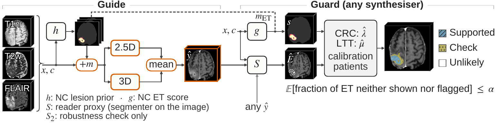
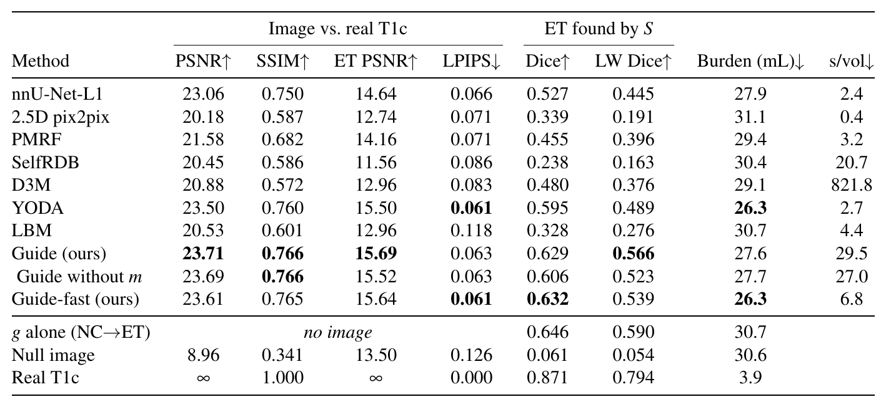
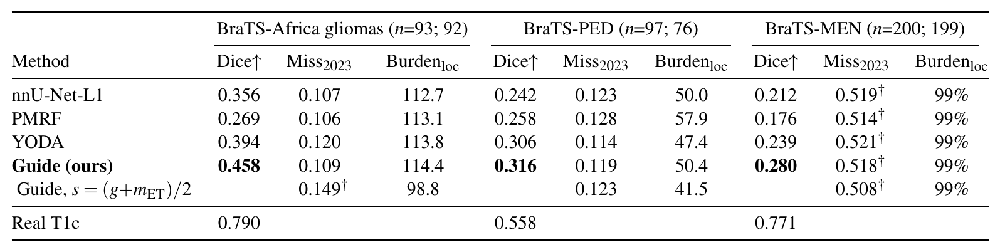
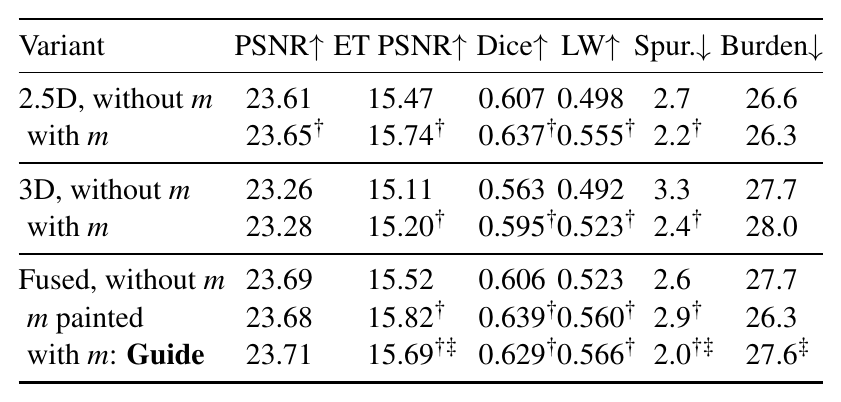
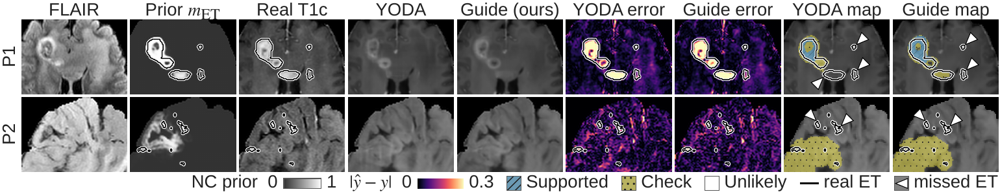
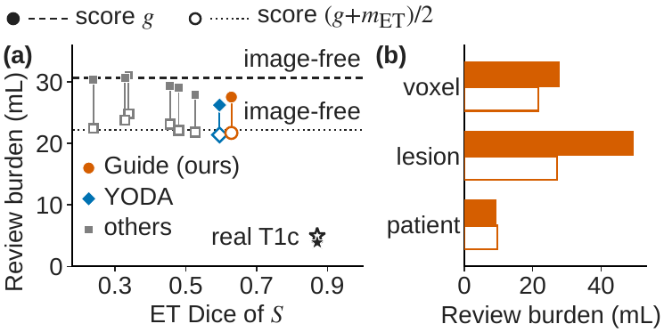

Guide and Guard
Guide and Guard: Prior-Guided Virtual-Contrast MRI Synthesis with Conformal Flags for Missed Enhancement
Guide: synthesise T1c from non-contrast MRI.
Guard: flag the enhancement the image may miss.
Conformal control of the miss, for any synthesiser.
01 / ABSTRACT
Abstract
Virtual-contrast synthesis generates post-contrast T1 (T1c) from non-contrast (NC) brain MRI but can omit enhancing tumour (ET) without showing where. Guard adds to any synthesiser’s T1c a map of Supported, Check and Unlikely voxels. Flags follow an NC-only ET score so that, for exchangeable patients, the expected fraction of ET that the image neither shows nor flags stays below a target \alpha. Guide gives regression synthesisers out-of-fold NC lesion maps as input channels. For 8 synthesisers retrained on a BraTS 2023 split (226 held-out patients), \alpha=0.1 cost 26.3–31.1 mL of flagged non-ET tissue, the review burden (mean ET volume 20.0 mL); an averaged score chosen post hoc gave 21.4–24.9 mL (exploratory). Guide raised ET Dice by 0.023 over the same recipe without it but did not lower the burden. On external gliomas the mean miss exceeded 0.1 by at most 0.028 (not significant); on meningiomas the bound failed.

02 / METHOD
Method
- Lesion prior. An NC segmenter h (nnU-Net 2D, 5 folds) predicts lesion maps m = WT / TC / ET. Training cases receive their out-of-fold maps, so the synthesisers never see a prior fitted to their own target.
- Guide. The maps are added as input channels to two regression synthesisers: a 2.5D YODA regressor and a 3D nnU-Net with L1 loss (two runs). Guide's image is the mean of the 2.5D member and the averaged 3D runs, with left–right flip test-time augmentation. Guide-fast uses the 2.5D member only, without test-time augmentation and with h's fold 0 only.
- Guard. Conformal risk control (CRC) on an NC-only ET score bounds the expected miss. ET that the reader proxy S finds on the image counts as covered, so the bound holds for any synthesiser. Learn-then-Test (LTT) controls false discoveries in the Supported level.
- Review burden. Guard's cost is the non-ET volume marked Supported or Check. The same score calibrated without an image (NC-only CRC) gives the burden without any image, so the difference measures what the image adds.
Four segmentation networks are used, all nnU-Nets trained on our training split and then frozen:
| Network | Configuration | Role |
|---|---|---|
| h | 2D, 5 folds | NC lesion maps m = WT / TC / ET (Guide's prior) |
| g | 3D full resolution | NC ET score (Guard's primary score) |
| S | 3D full resolution, all four sequences | reader proxy that marks the ET an image shows |
| S₂ | robustness check in the paper only; not released |
03 / RESULTS
Results from the paper
Tables and figures as they appear in the paper.





04 / MORE RESULTS
More from the code release
Results
Held-out BraTS 2023 GLI test set (249 cases; burden: score g, α = 0.1), as reported in the paper:
| Method | PSNR ↑ | SSIM ↑ | ET Dice (by S) ↑ | Review burden ↓ |
|---|---|---|---|---|
| Guide | 23.71 dB | 0.766 | 0.629 | 27.6 mL |
| Guide-fast | 23.61 dB | 0.765 | 0.632 | 26.3 mL |
| NC-only CRC (no image) | 0.646 (of g) | 30.7 mL | ||
| Real T1c (reference) | ∞ | 1.000 | 0.871 | 3.9 mL |
Qualitative Results

Fig. 2. Held-out patients, zoomed (rules fixed in advance): P1 at the 25th percentile of ET volume; P2 a failure case, most of whose small ET lesions are neither shown nor flagged (missed ET). Errors and Guard's maps (α = 0.1, score g).
05 / CODE
Code and usage
Installation
git clone https://github.com/genmilab/Guide-Guard.git
cd Guide-Guard
Three Python environments are needed, because the two Guide members depend on different upstream code bases.
| Env | Used for | Install |
|---|---|---|
main |
h, g, S, fusion, Guard | pip install -r requirements.txt |
yoda |
the 2.5D member | pip install -r requirements-yoda.txt, plus a clone of YODA (commit 86e8dc8), export YODA_ROOT=/path/to/YODA |
nnt |
the 3D member | pip install -e of nnUNet_translation (commit 98f2406), then python scripts/install_trainer.py |
ema-pytorch in requirements-yoda.txt is only needed for training.
Pretrained Weights
Download guide-guard-checkpoints.zip from Hugging Face and unzip it:
huggingface-cli download Atharva-Rege/guide-guard guide-guard-checkpoints.zip --local-dir .
unzip guide-guard-checkpoints.zip # -> guide-guard-checkpoints/, used as CKPT below
cd guide-guard-checkpoints && sha256sum -c MANIFEST.txt
| Folder | Network | Checkpoint |
|---|---|---|
h/ |
NC lesion prior h (nnU-Net 2d, folds 0–4) | fold_k/checkpoint_final.pth |
g/ |
NC ET score g (nnU-Net 3d_fullres, trained on all training cases: fold 5) | fold_5/checkpoint_final.pth |
S/ |
reader proxy S (nnU-Net 3d_fullres) | fold_0/checkpoint_final.pth |
guide25d/ |
Guide's 2.5D member (YODA regression + prior, EMA) | guide25d.pt |
guide3d_r1/, guide3d_r2/ |
Guide's 3D member, two runs (nnUNetTrainerGuide3D) |
chosen by fold_0/selection.json |
Data
Inputs are BraTS-layout volumes: SRI24 space, 1 mm, 240 × 240 × 155, skull-stripped. Each case folder holds <case>-{t1n,t2w,t2f}.nii.gz, plus t1c and seg for training or evaluation.
python scripts/preprocess.py --raw_root /data/BraTS2023-GLI --out VOL # add --no_target --no_seg for inference-only data
Preprocessing: - The brain mask is the union of the nonzero voxels of the NC inputs. - NC inputs are clipped to the brain [p0.5, p99.5]; T1c is clipped to the brain [p0.5, p99.9]. - Both are rescaled to [0, 1].
splits/ holds the patient-level split used in the paper (876 train / 126 val / 249 test cases) and the 5-fold CV of the training cases:
splits/
├── brats23gli_split_v1.csv # case, patient, split (train / val / test)
└── brats23gli_train_folds_v1.csv # case, patient, fold (h's 5-fold CV over the training cases)
Inference
One command runs the full Guide pipeline (lesion maps, both members, fusion, reader proxy):
PY_MAIN=/envs/main/bin/python PY_YODA=/envs/yoda/bin/python PY_NNT=/envs/nnt/bin/python \
bash scripts/run_guide.sh VOL CKPT WORK [--fast] [--cases BraTS-GLI-00000-000 ...]
| Output | Contents |
|---|---|
WORK/guide/<case>.npy |
Guide T1c (float16, [0, 1], 0 outside the brain) |
WORK/maps/{h,g}/<case>.npz |
NC lesion maps (WT, TC, ET) and the NC ET score g |
WORK/reader/guide/<case>.npz |
Segmenter S on the synthetic image |
--fast runs Guide-fast instead (2.5D member only, no test-time augmentation, h's fold 0 only). Its output goes to WORK/guide_fast.
Running the steps one at a time
| Step | Script | Env |
|---|---|---|
| 1. NC lesion maps (h) and NC ET score (g) | predict_maps.py |
main |
| 2. 2.5D member | predict_guide25d.py |
yoda |
| 3. 3D member (each run) | predict_guide3d.py |
nnt |
| 4. Average the 3D runs, then the two members | fuse_guide.py |
main |
| 5. Reader proxy S on the fused image | predict_reader.py |
main |
See scripts/run_guide.sh for the exact arguments.
Image evaluation. Image quality and the ET Dice of S, per case (brain PSNR, SSIM and MAE; ET PSNR; ET Dice with --reader). LPIPS and the lesion-wise Dice of Table 1 are not computed here.
python scripts/evaluate_images.py --vol_root VOL --images WORK/guide --reader WORK/reader/guide --out images_eval.csv
Guard
Guard works with any synthesiser. For the images of that synthesiser:
- Run
predict_reader.pyon its images (andpredict_maps.py --models g, plushfor the averaged score). - Calibrate on labelled patients who are not used for testing, one timepoint per patient.
- Apply the calibrated thresholds, or evaluate them.
python scripts/guard.py calibrate --vol_root VOL --reader WORK/reader/guide --maps WORK/maps --cases cal.txt \
--alpha 0.1 --out thresholds.json
python scripts/guard.py apply --vol_root VOL --reader WORK/reader/guide --maps WORK/maps --cases test.txt \
--thresholds thresholds.json --out WORK/guard_maps # uint8: 0 Unlikely, 1 Check, 2 Supported
python scripts/guard.py evaluate --vol_root VOL --reader WORK/reader/guide --maps WORK/maps --cases test.txt \
--thresholds thresholds.json --out guard_eval.csv # miss, review burden, Supported FDP
| Option | Effect |
|---|---|
--score g (default) |
NC ET score g, the paper's primary score |
--score avg |
averaged score s = (g + m_ET) / 2 |
--no_image (in place of --reader) |
NC-only CRC, the image-free baseline map; calibrate, apply and evaluate it the same way. Its burden minus the image's burden is what the image saves |
--variant voxel (default) / lesion / tail |
voxel-level, lesion-level or patient-tail miss loss |
Defaults follow the paper: α = 0.1, β = 0.2, δ = 0.1, ET-positive patients have ≥ 50 ET voxels, and false discoveries lie over 2 mm from the reference ET.
The guarantee holds marginally, in expectation, for ET-positive test patients exchangeable with the calibration patients. Recalibrate before using Guard on a new cohort.
Training
The released checkpoints are enough for inference and for Guard. Retraining Guide needs the baseline synthesisers retrained on our split, which both members are fine-tuned from. These base weights are not in the Hugging Face repo; a folder BASE with them is assumed below:
- yoda.pt: YODA in regression mode (20 input channels, 1 output, EMA weights);
- nnunet_l1.pth: nnU-Net-L1 (nnUNet_translation nnUNetTrainerMRCT_mae, nnResUNetPlans).
Step 1. h, g, S (nnU-Net v2, region-based WT/TC/ET)
python scripts/make_nnunet_datasets.py --vol_root VOL --split_csv splits/brats23gli_split_v1.csv \
--folds_csv splits/brats23gli_train_folds_v1.csv
nnUNetv2_plan_and_preprocess -d 511 512
python scripts/make_nnunet_datasets.py --vol_root VOL --split_csv splits/brats23gli_split_v1.csv \
--folds_csv splits/brats23gli_train_folds_v1.csv --splits_only
for f in 0 1 2 3 4; do nnUNetv2_train 511 2d $f -tr nnUNetTrainer_250epochs --npz; done # h
nnUNetv2_train 511 3d_fullres 5 -tr nnUNetTrainer_250epochs # g
nnUNetv2_train 512 3d_fullres 0 -tr nnUNetTrainer_250epochs # S
Then write the lesion maps. Training cases get their out-of-fold maps:
python scripts/predict_maps.py ... \
--from_cv $nnUNet_results/Dataset511_GuideNC/nnUNetTrainer_250epochs__nnUNetPlans__2d --folds_csv ...
All other cases get the 5-fold ensemble: predict_maps.py --models h.
Step 2. 2.5D member (from BASE/yoda.pt)
python scripts/train_guide25d.py --vol_root VOL --maps MAPS/h --split_csv splits/brats23gli_split_v1.csv \
--base_ckpt BASE/yoda.pt --out RUN
python scripts/select_guide25d.py --run_dir RUN --vol_root VOL --maps MAPS/h --split_csv splits/brats23gli_split_v1.csv
Step 3. 3D member (from BASE/nnunet_l1.pth)
python scripts/make_guide3d_dataset.py raw --vol_root VOL --maps MAPS/h --split_csv splits/brats23gli_split_v1.csv
nnUNetv2_extract_fingerprint -d 622 && nnUNetv2_plan_experiment -d 622 -pl nnUNetPlannerResUNet
nnUNetv2_preprocess -d 622 -plans_name nnResUNetPlans -c 3d_fullres
python scripts/make_guide3d_dataset.py splits --vol_root VOL --split_csv ...
python scripts/make_guide3d_dataset.py inject --vol_root VOL --split_csv ...
GUIDE3D_INIT=BASE/nnunet_l1.pth nnUNetv2_train 622 3d_fullres 0 -tr nnUNetTrainerGuide3D -p nnResUNetPlans
python scripts/select_guide3d.py --model_dir RESULTS/... --vol_root VOL --maps MAPS/h --split_csv ...
The paper averages two independent runs of this step.
| Setting | 2.5D member | 3D member |
|---|---|---|
| Initialisation | BASE/yoda.pt |
BASE/nnunet_l1.pth |
| Schedule | 25k steps, Adam, cosine 1e-4 → 1e-6 | 400 epochs |
| Loss | MSE + auxiliary WT/TC/ET head (weight 0.005) | L1 + 5 × MSE + auxiliary head (Dice + BCE) |
| Prior dropout | 0.15 | 0.15 |
| Augmentation | left–right flips | left–right flips |
| Selection | best validation brain PSNR (released: step 20k) | best validation brain PSNR; snapshot and tile step in selection.json |
Tests
pip install pytest && python -m pytest -q tests
tests/test_guard.py checks CRC miss control, the Guard map at λ = 0, the image-free threshold and member fusion.
Repository Structure
Guide-Guard/
├── guideguard/
│ ├── volumes.py # BraTS I/O, brain mask, intensity normalisation
│ ├── guide25d.py # 2.5D member (YODA regression + prior)
│ ├── guide3d.py # 3D member data and inference helpers
│ ├── fuse.py # weighted, brain-masked member fusion
│ ├── guard.py # CRC / LTT calibration, Guard maps, miss and burden
│ ├── metrics.py # PSNR, SSIM, MAE, Dice
│ ├── nnunet_helpers.py # nnU-Net dataset and prediction utilities
│ └── nnunet_ext/ # nnUNetTrainerGuide3D (installed by scripts/install_trainer.py)
├── scripts/
│ ├── run_guide.sh # end-to-end Guide inference
│ ├── preprocess.py # raw BraTS -> normalised volumes
│ ├── predict_*.py # h/g maps, 2.5D and 3D members, reader proxy S
│ ├── fuse_guide.py # member fusion
│ ├── guard.py # calibrate / apply / evaluate
│ ├── evaluate_images.py # per-case image metrics
│ ├── make_*_dataset*.py # nnU-Net dataset builders
│ ├── train_guide25d.py, select_guide25d.py, select_guide3d.py
│ └── install_trainer.py
├── splits/ # patient-level split and 5-fold CV used in the paper
├── tests/ # Guard unit tests
├── docs/assets/ # README figures (Fig. 1 method, Fig. 2 qualitative)
├── requirements.txt # env `main`
└── requirements-yoda.txt # env `yoda`
06 / CITATION
BibTeX
@misc{rege2026guideguard,
title = {Guide and Guard: Prior-Guided Virtual-Contrast MRI Synthesis with Conformal Flags for Missed Enhancement},
author = {Rege, Atharva Atul and Dukre, Adinath Madhavrao and Razzak, Imran},
note = {Under review at IEEE ISBI 2027},
year = {2026},
url = {https://github.com/genmilab/Guide-Guard}
}Acknowledgments
The code builds on YODA, nnU-Net and nnUNet_translation. We thank their authors for sharing their code. The models were trained on the BraTS 2023 GLI data; we thank the BraTS organisers and data contributors.
Contact
For questions or collaboration, please open an issue or reach out to Adinath Madhavrao Dukre.
License
The code and model weights are released under Apache-2.0 (LICENSE). YODA, nnU-Net and nnUNet_translation are also Apache-2.0. The models were trained on BraTS 2023 GLI (CC BY 4.0).
Guide and Guard are intended for research only. They are not validated for clinical use and must not inform any diagnostic or treatment decision.